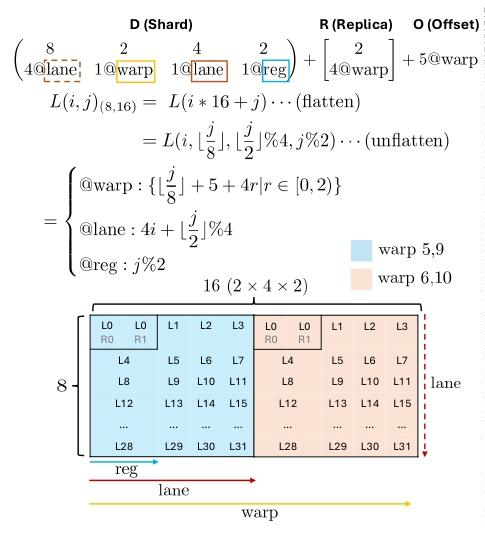
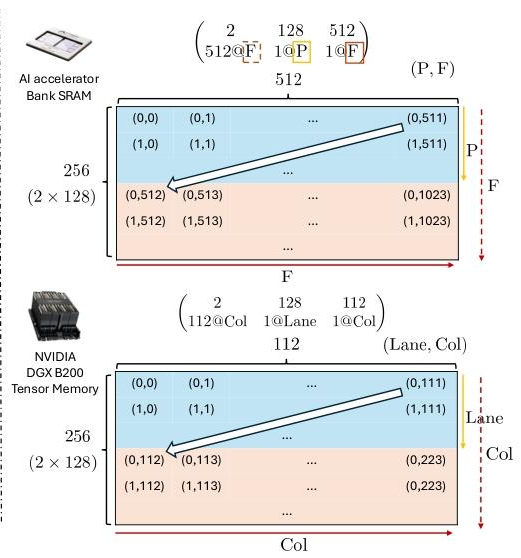

这篇论文是陈天奇团队的成果，提出一个统一的硬件感知抽象（Axe Layout），将逻辑张量坐标映射到多维物理空间，并设计基于此的多粒度、分布式感知的编译器DSL。今天就来解析一下Axe Layout的设计思路和实现细节。
核心公式
Axe Layout将逻辑张量索引映射到物理坐标集合：
\[L(x) = \{ D(x) + r + O \mid r \in R \}\]
其中：
D (Shard) - 分片映射
- 是一个有序的iter列表
- 每个iter = (extent, stride, @axis)
- extent: 硬件维度的逻辑大小
- stride: 相邻逻辑元素在硬件维度上的距离
- @axis: 物理轴的标签（device, warp, lane等）
- 作用：将逻辑索引转换为物理坐标
R (Replica) - 复制维度
- 是一个集合（无序），独立于逻辑索引
- 格式：{axis_name: replica_count, …}
- 作用：为并行执行添加额外维度
- 例如：4个线程独立执行相同的计算
O (Offset) - 偏移
- 固定的基地址或资源保留
- 格式：{axis_name: offset_value, …}
- 例如：数据在内存中的起始位置、执行器件偏移
Code
import numpy as np
import itertools
import pycute as cute
from typing import List, Tuple, Dict
from dataclasses import dataclass
@dataclass
class Iter:
extent: int
stride: int
axis: str
def __repr__(self):
return f"({self.extent}, {self.stride}@{self.axis})"
@dataclass
class AxeLayout:
D: List[Iter]
R: List[Iter]
O: Dict[str, int]
def __repr__(self):
d_str = " × ".join(map(str, self.D))
r_str = " × ".join(map(str, self.R)) if self.R else "∅"
o_str = ", ".join([f"{v}@{k}" for k, v in self.O.items()]) if self.O else "∅"
return f"D: {d_str} | R: {r_str} | O: {o_str}"
def print(self, name=""):
if name:
print(f"\n{name}:")
if not self.D:
d_extent_line = "( )"
d_stride_line = "( )"
else:
col_widths = []
for iter_obj in self.D:
extent_str = str(iter_obj.extent)
stride_str = f"{iter_obj.stride}@{iter_obj.axis}"
col_width = max(len(extent_str), len(stride_str))
col_widths.append(col_width)
extent_parts = []
for i, iter_obj in enumerate(self.D):
extent_str = str(iter_obj.extent)
padded = extent_str.center(col_widths[i])
extent_parts.append(padded)
d_extent_line = "( " + " ".join(extent_parts) + " )"
stride_parts = []
for i, iter_obj in enumerate(self.D):
stride_str = f"{iter_obj.stride}@{iter_obj.axis}"
padded = stride_str.rjust(col_widths[i])
stride_parts.append(padded)
d_stride_line = "( " + ", ".join(stride_parts) + " )"
if self.R:
r_col_widths = []
for iter_obj in self.R:
extent_str = str(iter_obj.extent)
stride_str = f"{iter_obj.stride}@{iter_obj.axis}"
col_width = max(len(extent_str), len(stride_str))
r_col_widths.append(col_width)
r_extent_parts = []
for i, iter_obj in enumerate(self.R):
extent_str = str(iter_obj.extent)
padded = extent_str.center(r_col_widths[i])
r_extent_parts.append(padded)
r_extent_line = "( " + " ".join(r_extent_parts) + " )"
r_stride_parts = []
for i, iter_obj in enumerate(self.R):
stride_str = f"{iter_obj.stride}@{iter_obj.axis}"
padded = stride_str.rjust(r_col_widths[i])
r_stride_parts.append(padded)
r_stride_line = "( " + ", ".join(r_stride_parts) + " )"
print(d_extent_line + " " + r_extent_line)
print(d_stride_line + " + " + r_stride_line, end="")
else:
print(d_extent_line)
print(d_stride_line, end="")
if self.O:
o_items = [f"{offset}@{axis}" for axis, offset in self.O.items()]
o_str = " + ".join(o_items)
print(" + " + o_str, end="")
print()
Examples
NVIDIA Tensor Core tile
有了基础的定义后， 我们可以尝试实现论文中的第一个例子， 映射逻辑 \(8×16\) tile到GPU的2个warp（各32 lane）+ 2个寄存器：
\[\begin{pmatrix}8 & 2 & 4 & 2 \\ 4@\texttt{lane} & 1@\texttt{warp} & 1@\texttt{lane} & 1@\texttt{reg}\end{pmatrix} + \begin{bmatrix}2 \\ 4@\texttt{warp}\end{bmatrix} + 5@\texttt{warp}\]

Code
layout_a = AxeLayout(D=[
Iter(8, 4, "lane"),
Iter(2, 1, "warp"),
Iter(4, 1, "lane"),
Iter(2, 1, "reg"),
],
R=[Iter(2, 4, "warp")],
O={"warp": 5})
layout_a.print("layout_a")
layout_a:
( 8 2 4 2 ) ( 2 )
( 4@lane, 1@warp, 1@lane, 1@reg ) + ( 4@warp ) + 5@warp
Distributed sharding on a 2×2 GPU mesh
假设一个\(64×128\)张量在4个GPU上的分片+复制混合：

完全切分（行按GPU行，列按GPU列分）： \[\begin{pmatrix}2 & 32 & 2 & 64 \\ 1@\texttt{gpuid} & 128@\texttt{m} & 2@\texttt{gpuid} & 1@\texttt{m}\end{pmatrix}\]
这里的gpuid表示设备维度，这里的m表示内存维度，如果把内存维度的Iter单独抽取出来，就可以计算在每个设备中Local Tensor的Layout。把gpuid的Iter出来，可以用stride来隐式体现gpu mesh的分布方式。
行切分+列复制（行切分，每行shard复制到行内两GPU）： \[\begin{pmatrix}2 & 32 & 128 \\ 1@\texttt{gpuid} & 128@\texttt{m} & 1@\texttt{m}\end{pmatrix} + \begin{bmatrix}2 \\ 2@\texttt{gpuid}\end{bmatrix}\]
实际上这两个就是经典的分布式张量切分方式，对应到SBP里面分别为：
\[
\begin{aligned}
(split(0), split(1)) \\
(split(0), broadcast)
\end{aligned}
\]
Code
layout_b = AxeLayout(D=[
Iter(2, 1, "gpuid"),
Iter(32, 128, "m"),
Iter(2, 2, "gpuid"),
Iter(64, 1, "m")],
R=[],
O={})
layout_b.print("layout_b")
layout_b:
( 2 32 2 64 )
( 1@gpuid, 128@m, 2@gpuid, 1@m )
Native multidimensional memory in Accelerators

这里是对于物理内存硬件的映射，认为P是memory bank partitions, F为free dimensions。主要体现的是Axe Layout是同时支持并行硬件维度和存储硬件的表达，所以当不考虑并行维度时，可以完成传统layout的功能。
Code
layout_c = AxeLayout(D=[
Iter(2, 512, "F"),
Iter(128, 1, "P"),
Iter(512, 1, "F")],
R=[],
O={})
layout_d = AxeLayout(D=[
Iter(2, 112, "Col"),
Iter(128, 1, "Lane"),
Iter(112, 1, "Col")],
R=[],
O={})
layout_c.print("layout_c")
layout_d.print("layout_d")
layout_c:
( 2 128 512 )
( 512@F, 1@P, 1@F )
layout_d:
( 2 128 112 )
( 112@Col, 1@Lane, 1@Col )
Forward Mapping
AxeLayout实际上是定义了logical index与hardware index的relation，基于此所实现的 logical index -> parallel index的映射称为forward mapping。
我这里拿第一个例子，具体计算前向过程。首先shard部分负责分解原始的logical index，而他的stride是应用于hardware axes的。而后replica则会扩展映射集合，和offset部分一起将偏移作用到hardware axes上。
logical coord: (i=2, j=9)
▼
shape: (8, 16)
▼
linear index: 2 * 16 + 9 = 41
▼
decomposed index as:
> 41 ÷ 16 = 2
> (41 % 16) ÷ 8 = 1
> ((41 % 16) % 8) // 2 = 0
> ((41 % 16) % 8) % 2 = 1
▼
shard coord:
( 2 , 1 , 0 , 1 )
▼
( 8 2 4 2 ) ( 2 )
D = (4@lane, 1@warp, 1@lane, 1@reg) + R = (4@warp) + O = (5@warp)
▼
> lane = 2*4 + 0*1 = 8 > warp0 = 0*4 = 0 > warp = 5
> warp = 1*1 = 1 > warp1 = 1*4 = 4
> reg = 1*1 = 1
▼
{lane: 8, warp: 1, reg: 1} + [{warp: 0}, {warp: 4}] + {warp: 5}
▼
offset = [
{warp: 1+0+5 = 6 , lane: 8, reg: 1},
{warp: 1+4+5 = 10, lane: 8, reg: 1}
]
上述流程也许有些抽象，我们可以通过代码来更直观地理解Axe Layout的前向计算过程。 这里我复用了cute中的一些函数来辅助计算映射过程：
Code
def forward(self: AxeLayout, coord: Tuple[int, ...], shape: Tuple[int, ...]):
# 1. map layout to AxeLayout's shard
shard_extents = tuple(i.extent for i in self.D)
org_idx = cute.crd2idx(coord, shape, cute.suffix_product(shape))
shard_crd = cute.idx2crd(org_idx, shard_extents[::-1])[::-1] # reverse for correct order
shards = [(idx * it.stride, it.axis) for (idx, it) in zip(shard_crd, self.D)]
rep_set = []
replica = self.R if len(self.R) else [Iter(1, 0, None)]
for reps in itertools.product([(i * it.stride, it.axis) for it in replica for i in range(it.extent)]):
d = dict()
for val, axis in shards: # D
d[axis] = d.get(axis, 0) + val
for val, axis in reps: # R
if axis is not None:
d[axis] = d.get(axis, 0) + val
for axis, val in self.O.items(): # O
d[axis] = d.get(axis, 0) + val
rep_set.append(d)
return rep_set
接下来我们给定一个具体的logical coordinate (2, 9)，并通过Axe Layout的forward函数来计算映射到的并行轴坐标集合：
Code
def pretty_print(crd: List[Dict[str, int]], **kwargs):
key_order = dict()
for k,v in kwargs.items():
key_order[k] = v
print([{k: d[k] for k in sorted(d, key=lambda k: key_order.get(k, 99))} for d in crd])
AxeLayout.forward = forward
hardware_coords = layout_a.forward((2, 9), (8, 16))
pretty_print(hardware_coords, warp=0, lane=1, reg=2)
[{'warp': 6, 'lane': 8, 'reg': 1}, {'warp': 10, 'lane': 8, 'reg': 1}]
Backward Mapping
Axe Layout同样支持从 hardware index -> logical index的映射过程，称为backward mapping。这个过程就会比之前稍微简单一些，因为不需要考虑replica的扩展，只需要将offset和shard的过程反过来即可。具体流程我就不赘述，直接给出代码：
Code
def backward(self: AxeLayout, indices: List[Dict[str, int]], shape: Tuple[int, ...]):
index = indices[0].copy()
# 1. remove O
for axis, offset in self.O.items():
index[axis] = index.get(axis, 0) - offset
# 2. skip R
# 3. remove D
shard_domains: Dict[str, List[Tuple[int, int, int]]] = {}
for i, it in enumerate(self.D):
sdomain = shard_domains.get(it.axis, ([]))
sdomain.append((i, it.extent, it.stride))
shard_domains[it.axis] = sdomain
scoords = [-1] * len(self.D)
for axis, tps in shard_domains.items():
tps.sort(key=lambda it: it[0])
slayout = cute.Layout(tuple(tp[1] for tp in tps), tuple(tp[2] for tp in tps))
sindex = index[axis]
scrd = cute.idx2crd(sindex, slayout.shape, slayout.stride)
for i, (idx, _, _) in enumerate(tps):
scoords[idx] = scrd[i]
shard_extents = tuple(it.extent for it in self.D)
linear_idx = cute.crd2idx(tuple(scoords), shard_extents, cute.suffix_product(shard_extents))
logical_coord = cute.idx2crd(linear_idx, shape, cute.suffix_product(shape))
return logical_coord
我们逆推之前layout a的backward结果，可以检查backward的结果和forward给的输入是一致的：
Code
AxeLayout.backward = backward
logical_coord = layout_a.backward(hardware_coords, (8, 16))
assert logical_coord == (2, 9)
print(logical_coord)
总结
这篇论文里面还提到支持Tile，Slice等操作，实际上也都是可以复用cute Layout Algorithm来实现的，这里就不进一步展开了。 同时还有一些编译器语法的前端支持，比如如何定义Tensor，Execution scopes， 这些内容不是我关注的重点，也就不展开了。 总的来说Axe Layout还是一个比较简洁且强大的张量布局抽象，他察觉到了在sharding的时候，实际上需要绑定tensor logical shape和hardware shape，因此可以把两部分放到一个Shard结构中进行统一处理，这样把parallel resource和memory resource都可以纳入同一个layout framework下进行处理，能在兼容原始layout的同时方便的扩展分布式能力。